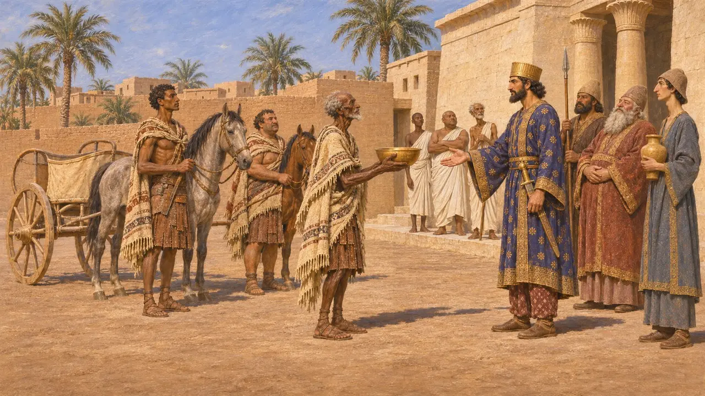
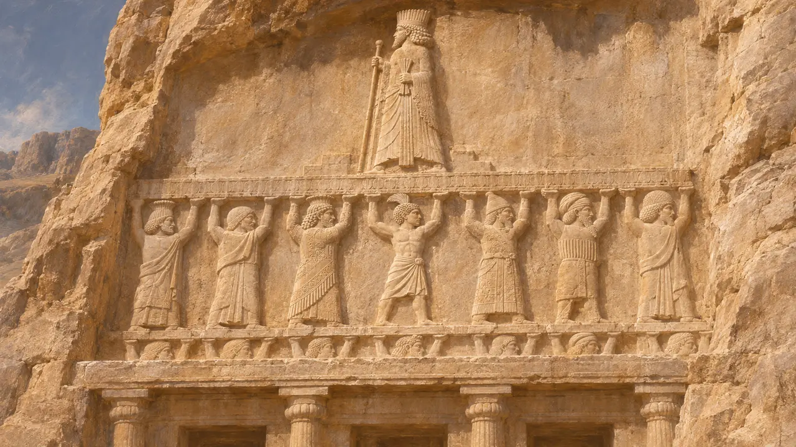
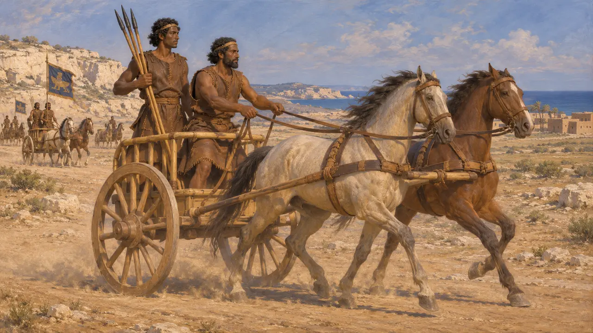
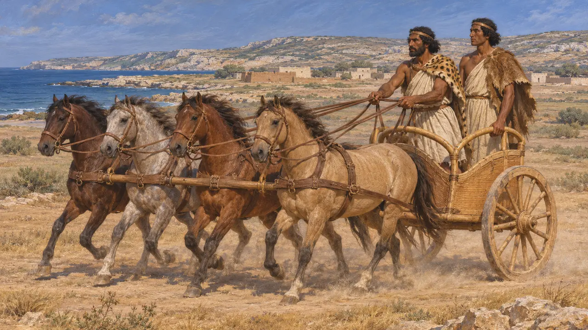
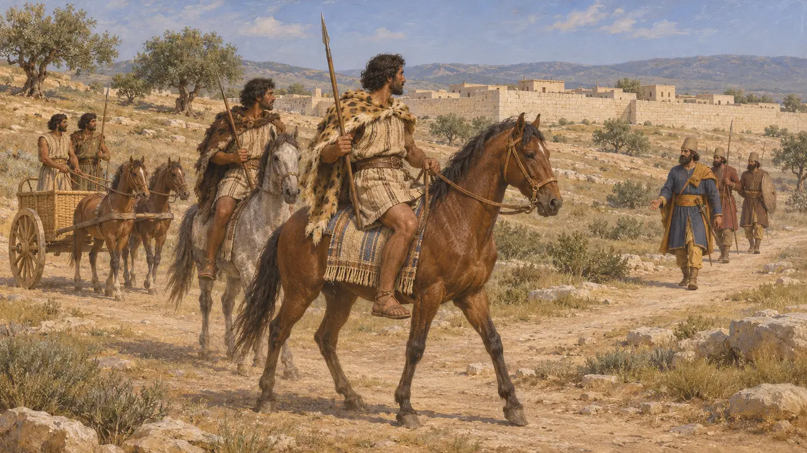

الخيّالة الليبيون
شعوب غرب مصر تستخدم الخيل والعربات، خضعت لفارس منذ 525 ق.م
في اللعبة: المستوى 2: حامل الرمح
كان الليبيون شعوب الصحراء والساحل الواقعة غرب وادي النيل. ويقول هيرودوت إنه حين استولى قمبيز على منف سنة 525 ق.م، خضع الليبيون المجاورون دون قتال وأرسلوا الهدايا. ثم أدرج داريوس لاحقًا ليبيا، واسمها بوتايا في الفارسية القديمة، ضمن بلاده، وسار سائقو عربات ليبيون في جيش خشايارشا سنة 480 ق.م.
في اللعبة: تتضمّن مرحلة منف (525-524 ق.م) وحدة الخيّال الليبي. غير أن المصادر تصف الليبيين في الخدمة الفارسية سائقي عربات لا فرسانًا، ولا يذكر هيرودوت أي ليبيين قاتلوا ضد قمبيز، ولذا فإن هذه الوحدة تبسيط للتاريخ.

الخضوع لقمبيز
رواية قديمةيقول هيرودوت إنه بعد سقوط منف عام 525 ق.م، ارتاع الليبيون المجاورون لمصر واستسلموا دون قتال. فقبلوا دفع الجزية وأرسلوا الهدايا، وفعلت مثلهم المدينتان اليونانيتان قورينا وبرقة. وتقبّل قمبيز هدايا الليبيين بلطف، لكنه، كما يقول هيرودوت، استخفّ بهدية القورينيين الضئيلة ونثرها بين جنوده.
Herodotus 3.13

ليبيا في قوائم الملك
في السجلاتيذكر نقش ضريح داريوس في نقش رستم بوتايا، التي يُرجَّح عموماً أنها ليبيا، بين البلاد التي حكمها. وعلى واجهة الضريح، ترفع صورٌ منحوتة للشعوب الخاضعة، نُقش اسم كلٍّ منها بجانبها، المنصّةَ المرتفعة التي يقف عليها الملك، ومن بينها رجل ليبي. وقد كرّر خشايارشا ذكر بوتايا في قائمته الخاصة بالبلاد.
DNa; DNe; XPh

سائقو العربات في جيش خشايارشا
رواية قديمةيصف هيرودوت الليبيين عام 480 ق.م بأنهم كانوا يلبسون الجلود ويحملون رماحًا قصيرة مقسّاة بالنار، بقيادة قائد يُدعى ماساغيس. ويقول في قائمته للقوات الراكبة إن الليبيين جميعًا كانوا يقودون العربات. ويعدّ الهجّانة العرب وسائقي العربات الليبيين معًا 20,000، وهو رقم يعدّه المؤرخون غير موثوق كسائر أعداده لمجموع الجيوش.
Herodotus 7.71; Herodotus 7.86; Herodotus 7.184

فرسان أم سائقو عربات
متنازع عليهيؤكد الكتّاب اليونانيون مهارة الليبيين في التعامل مع الخيل، ويقول هيرودوت إن اليونانيين تعلّموا من الليبيين شدّ أربعة خيول إلى العربة. غير أن شواهده تخص العربات في الغالب لا الفرسان الراكبين. أما الخيّالة النوميديون المشهورون فينتمون إلى عصر متأخر كثيرًا، ويحذّر المؤرخون من إسقاطهم على القرن السادس.
Herodotus 4.170; Herodotus 4.189; O. Bates, The Eastern Libyans, 1914

إلى أيّ مدى امتدّ الحكم الفارسي
متنازع عليهيضع هيرودوت الليبيين وقورينا وبرقة في دائرة الجزية نفسها التي تضم مصر، ويروي كيف أرسل الحاكم أرياندس جيشًا على برقة. ويتجادل المؤرخون حول مدى إحكام فارس قبضتها على القبائل الليبية وإقليم قورينائية، وهل كانت الجزية هناك منتظمة أم مجرد هدايا عرضية.
Herodotus 3.91; Herodotus 4.200-204; P. Briant, From Cyrus to Alexander, 2002
المصادر
- Herodotus 3.13
- Herodotus 7.71; 7.86
- DNa
- Herodotus 4.168-204
- P. Briant, From Cyrus to Alexander, 2002
- O. Bates, The Eastern Libyans, 1914